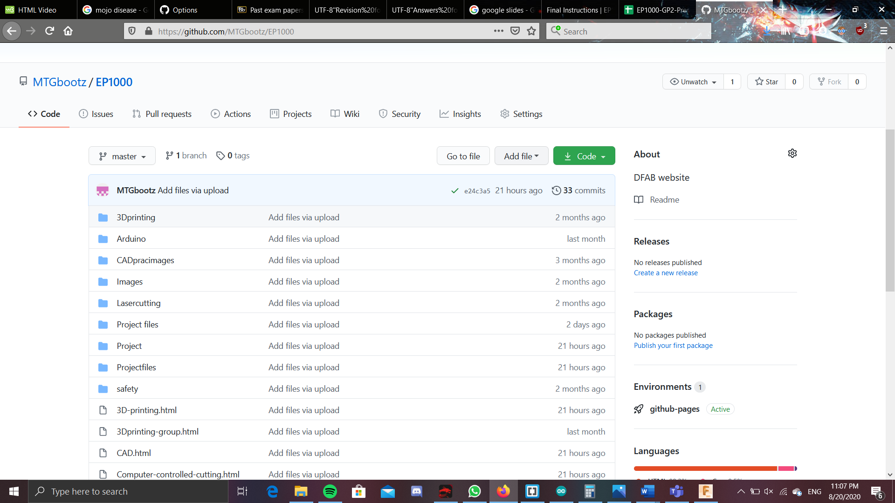

HTML
We learnt that we had to do web page programming to journal down what we have learnt during the dfab lessons. In the end, I used brackets to program our html pages. We used videos like this(learn html) and this(Learn more html) to learn how to do webpage programming on our notepads. However this can easily be adapted to brackets as the mcommands are all basically the same. Furthurmore, with brackets, it allows 'shortcuts' by where you start typing something like {p} then {/p} would automatically show up.(i could not use the <> sign for explaining the paragraph start just now as it was be regestiered as a tag, thus i resorted to {}. Additionally we were thought we could also use mark down, but i did not really see the need to do so as i already had the main structure of the website programmed in CSS and brackets. Also for this, as it was impossible to make < or >, therefore, we used this website https://rapidtables.com/web/html/html-codes.html to reference the code for the tags.
Tags used often in brackets(html):
(This is used to make a dotted lists .<ul></ul> starts the dotted list and {li}{/li} to make a dotted point)
(this is gonna be very important as this is the way to add a website to your website which would be very useful when you need to reference to something.)
This is a way you can add pictures into your website. If the picture is in the same folder as the html file, then the portion where the file location is not neccessary. However is the location of the file is in a folder in the folder that the html file is, then you would need to just write the folder name as the file location. Else you would need to write the location of the file starting from the partition it is in. The name of the picture would be the same regardless of where it is. For the alt, that one is not neccessary, but it would be useful incase the pircture could not be shown, or the website could not find the picture file. Using this would shows the alt name in case the picture cannot be shown.
This is used to when trying to upload a mp4 or video files on the HTML file, and this will also allow that video to the interacted with, so by clicking on it, will enable the video to start playing.
CSS
As breifing mentioned before in the HTML portion, CSS is mainly used to give the website structure and eye-candy. But as this did not really impact the content on the page, i did not really pay too much attention to it. I used this website tp learn about css and it was really all that i used to make this website. However to make CSS work(or the version you are seeing now) it was crucial that i used divisions to seperate the parts of the files. So for example, i would seperate the the website to the navigation bars, the content, the copyright portion and so on. Then i was important to group all the divisions together into one larger division. This way, i was possibel to have spaces at the sides of the website, making it so that i was not word from 1 edge to the other. Similarly, with the smaller divisions, i was possible to shift them around the page, making navigation bar to the left of the contents container, or the copyright division all the way at the bottom of the page. Additionally, with divisions and CSS, I was able to add colour to the words and also the background, as well as changing the font.
Tags used in brackets(CSS):
same as that of the HTML
Other than the HTML and CSS code, there is also the github part. Github is where we will be placing our HTML files and all the other relevant documents for our website. When using github, you first have to create a 'repository'. This is basically where your files will be uploaded and this will also allow ur HTML files to become websites, where people with the link can access. 1 important thing after having your link, is that at the end, you have to also add in the name of the file you want to access, or maybe the hompage if the homepage would act as a way to access all the other files. An example would be this https://mtgbootz.github.io/EP1000/V2.html. If i had not written the V2.html at the back, then you would not be directed into any of the files, but because i placed the file name at the back, when clicking this link, you will be taken to this file. Now, all of this may be cool and all, but how do you actually make a repository. Well first you open up github, then click on new repository. Now put in the name of your repository, and then the rest is not really that important. Just at the bottom, you might also want to tick the add a readme file.
Then ur set, you have created ur on repository. Now you can click on the new file and upload file.

This way, you can add in all your HTML, CSS and other relevant files. One you have placed in all the files, click on the commit changes button
. Lastly, you have to go over to the settings and change the branch to a master branch.
Only now, will you be able to get the link for your website.